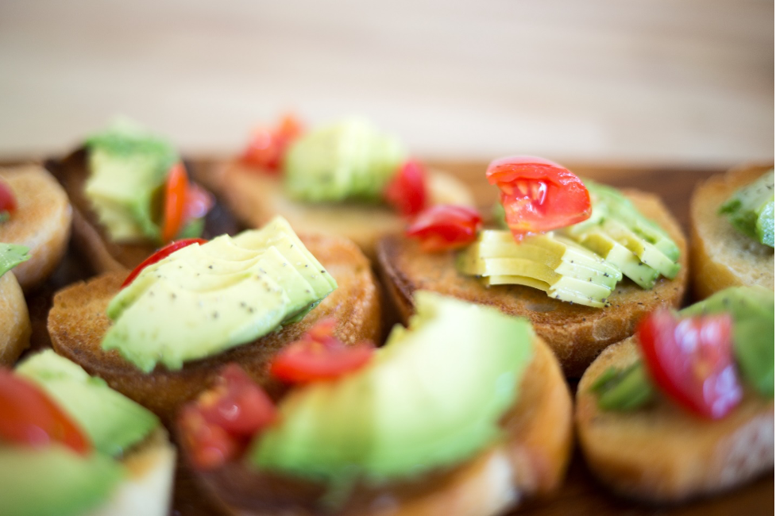

Avocado toast is seen as a luxury market. Affording your first new home (while once a rite of passage for your average young American) is increasingly a luxury market as well. Millennials have been mocked for frivolously squandering their income on small luxuries instead of saving for a house of their own. The reality is homes are no longer affordable and wages are stagnate forcing many young people to come to the conclusion that the only luxury they will be able to afford in their lifetimes are little purchases… like avocado toast.
Our question is “where can a millennial afford to own a home (And still eat their avocado toast)?" The answer can be found by looking at:
By identifying the counties with where you have low wages, low housing prices, and low avocado prices, we can find the ideal climate for your first-time buyer - who might have low wages.
We start by looking at your top markets for lowest housing prices. By doing this we define our market and prioritize our questions.
Of those, we sort out which had the highest wages. This will give the buyer the best chance at affording a home.
Once you have identified your ideal market, you compare it to the avocado markets available. If they are all in avocado markets, you select the best avocado prices (if organic is important, we have that information as well). These locations offer the best opportunity to “have your avocado toast and eat it too.”
If none of them are in avocado markets, we will know that “you cannot have your avocado toast and eat it too.”